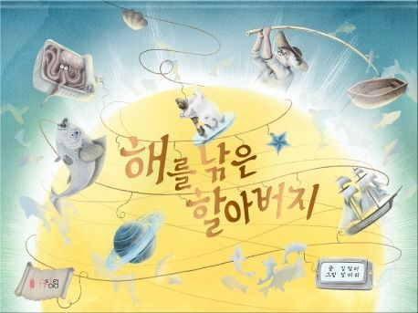
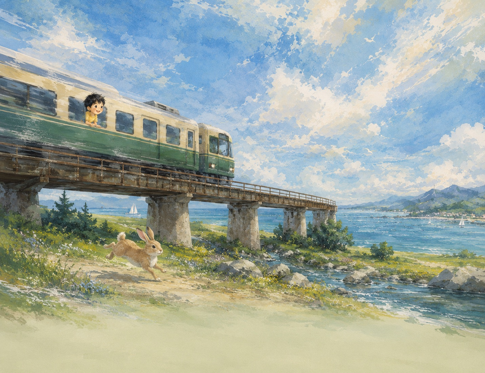

Picture Books
출간된 그림책과 준비 중인 그림책 프로젝트를 소개합니다.
About
Dancing Brush는 그림책, 창작 출판물, 출간 예정 프로젝트를 모아 보여주는 공간입니다. 책 한 권의 분위기와 장면을 웹에서도 자연스럽게 살펴볼 수 있도록 구성합니다.
Publishing
출간된 그림책과 준비 중인 그림책 프로젝트를 소개합니다.
표지와 주요 장면을 웹에서 볼 수 있는 프리뷰로 정리합니다.
출판 과정, 책 소개, 아카이브를 차례로 확장합니다.
Books
현재는 첫 번째 책과 두 번째 책 프리뷰를 중심으로 구성했습니다. 이후 출간 정보, 구매 링크, 작가 소개를 추가할 수 있습니다.

Picture Book
낚시에 자신 있던 할아버지가 바다에서 해를 낚으며 벌어지는 상상력 가득한 그림책입니다. 뜨거워진 바다와 곤란에 빠진 동물들을 통해 실수의 결과, 자연과의 균형, 함께 해결하는 힘을 생각하게 합니다.
책 정보 보기Second Book Preview
햇빛이 부서지는 바다 위로 초록 기차가 달립니다. 창밖을 바라보는 아이와 들판을 가로지르는 토끼를 따라, 설렘과 상상으로 이어지는 작은 여행의 첫 장면을 소개합니다.
프리뷰 보기